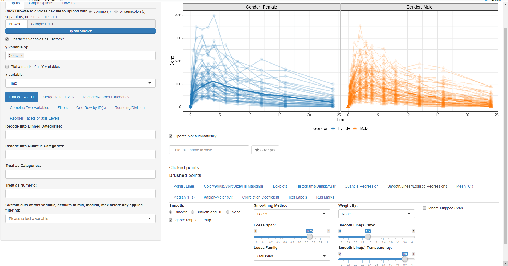

Introduction to ggquickeda
Samer Mouksassi
2024-04-27
Source:vignettes/ggquickeda.Rmd
ggquickeda.RmdThis R package/Shiny app is a handy interface to
ggplot2/table1. It enables you to quickly
explore your data to detect trends on the fly. You can do scatter plots,
dotplots, boxplots, barplots, histograms, densities and summary
statistics tables. For a quick overview using an older version of the
app head to this
Youtube Tutorial . This intro will walk you through making a plot
and a summary table.
# Install from CRAN:
install.packages("ggquickeda")
library(ggquickeda)
run_ggquickeda()After launching the app with run_ggquickeda() and
clicking on use sample_data: The app will load the built-in example
dataset and map the first column to y variable(s) and the second column
to x variable and a simple scatter plot with points will be
generated:

We want to look at the Column Conc (concentration of drug in blood) versus Time joining each Subject data with a line:
- Change the mapped y variable(s) from ID to Conc (remove the default selection of ID by clicking on the small x and then select Conc)
- Switch to the Points, Lines tab and select Lines (you can also choose another symbol for points and play with point sizes and transparency)
Wait something is wrong! We forgot to tell the app that we want to group by ID.
- Go Back to Color/Group/Split/Size/Fill Mappings tab and select ID for the Group By:
While we are on this tab let us map Color By:, Column Split:, Linetype By: and Shape By: to Gender

Now we want to add a loess trend line: * Go to Smooth/Linear/Logistic Regressions and click on the Smooth radio button:
 After we made the plot we wanted, now we
are interested to do a summary statistics of Weight and Age columns by
Gender this will require the following steps: * Change the mapped y
variable(s) to Weight, Age and Race * Change the mapped x variable to
Gender * Go to One Row by ID(s) and select ID so we
keep one row by ID
* Go to Descriptive Stats tab (notice how you can use
html codes for line breaks, superscript and subscript in the Quick HTML
Labels. e.g. Weight(kg))

Now launch the application on your own data that is already in R and
start exploring it:
run_ggquickeda(yourdataname)
Alternatively launch the application without any data and navigate to
your csv file: run_ggquickeda()